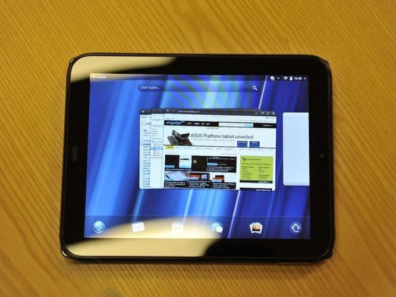

惠普 TouchPad

webOS 优雅交互的绝唱，上市 49 天即停产的悲情平板。
客观评测
TouchPad 采用 9.7 英寸 1024×768 IPS 屏，机身厚 13.7 毫米、重约 740 克，是当时平板中的大块头。高通 APQ8060 双核 1.2GHz 处理器配 1GB 内存，运行 webOS 3.0。实测卡片式多任务手势流畅度不俗，系统响应偶有迟滞，应用商店内容与 iOS 差距悬殊。上市仅 49 天惠普即宣布停产清仓，创下主流平板最快退市的纪录之一。
主观点评
webOS 的卡片界面至今看仍不过时，一根手指上滑即可分屏、切换、关闭，气质优雅。可惜硬件笨重、应用稀缺，加上惠普对平板业务的摇摆，让它成为史上最令人惋惜的非主流阵营产品之一。随后 99 美元的清仓引发排队疯抢，二手价格一度翻倍，成为数码圈长久的怀旧谈资。
优点与不足
- 卡片式多任务交互优雅直观
- Beats 音效与双前置扬声器
- Synergy 账号聚合理念超前
- 机身厚重，便携性差
- 应用商店内容严重不足
- 惠普战略摇摆导致迅速退市
参数规格
| 屏幕 | 9.7 英寸 IPS 触摸屏 |
|---|---|
| 分辨率 | 1024×768 |
| 处理器 | 高通 APQ8060 双核 1.2GHz |
| 内存 | 1GB |
| 存储 | 16GB / 32GB |
| 系统 | webOS 3.0 |
| 摄像头 | 前置 130 万像素 |
| 重量 | 约 740 克 |
| 厚度 | 约 13.7 毫米 |
| 电池 | 约 6300mAh |
| 特色 | 卡片式多任务手势、EnVe 正面立体声音箱 |